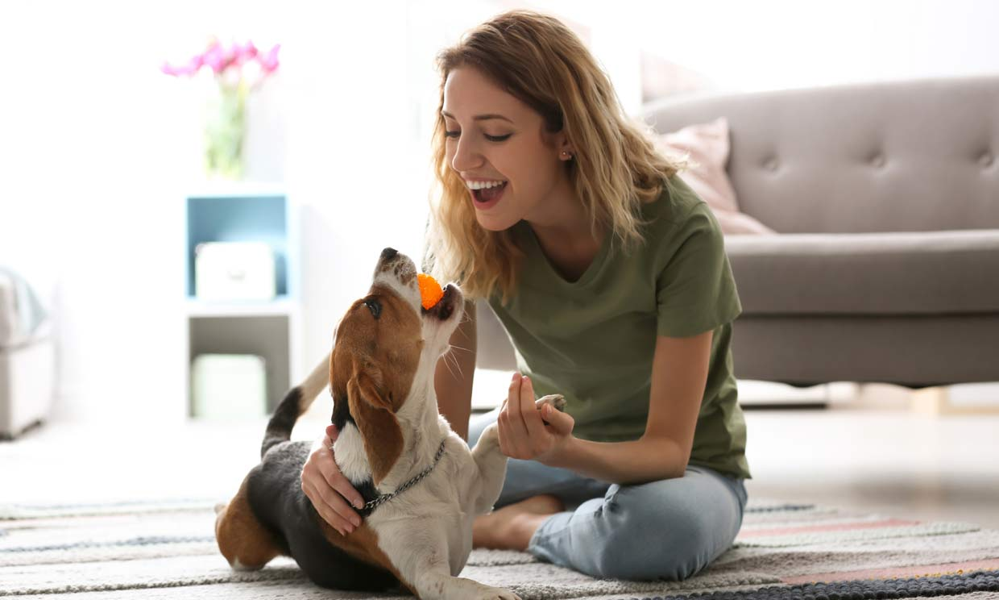

Una niña de 15 años, decidió que ya era lo suficientemente mayor como para quedarse sola en casa, su padres ofrecieron unas pequeñas vacaciones por un fin de semana pero ella decidió no ir. Segura de sí misma se quedaría sola con su fiel perro para protegerla. Sus padres se fueron, ella paso todo el día feliz y divirtiéndose a lo grande con su mascota.
